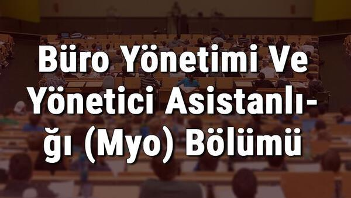

Pazarlama Bölümü Nedir?
Pazarlama; bir sektörde var olan ürünlerin sınıflandırılması ile başlayıp pazarlanması
ile sonuçlanan süreçtir.
Pazarlama Bölümü Eğitim Süresi Kaç Yıldır?

Pazarlama bölümü eğitim konusunda aynı isme sahip iki farklı seçenek ile karşımıza çıkmakta.
Bunlardan bir tanesi 2 yıllık pazarlama önlisans programıdır bir diğeri de 4 yıllık pazarlama
lisans bölümüdür. Pazarlama lisans bölümü ile önlisans bölümü arasındaki fark ise kısaca; 4 yıllık
pazarlama bölümünden mezun olanlar “uzman” seviyesinde mezuniyete sahip olacakken
2 yıllık önlisans bölümünden mezun olanlar ara personel olacak şekilde eğitim alırlar.
Pazarlama Bölümü Dersleri Nelerdir?
Türkiye uzun süredir iş gücünün niteliğini yükseltmek ve ekonominin tüm sektörlerinde istihdam imkânlarını artırabilmek için mesleki eğitim sistemini geliştirmeye çalışmaktadır. Dünyanın önde gelen ekonomileri ile rekabet etmek ve Avrupa Birliğine giriş sürecinde bu çaba daha da anlamlı hâle gelmektedir.
Günümüzde işletmelerin ve kurumların başarısı ve kârlılığın artması etkin bir muhasebe ve finans yönetimi ile mümkündür. İşletmelerde meydana gelen muhasebe ve finans olaylarının ilgililere güvenilir ve doğru bilgiler ile aktarılması ve kamuyu aydınlatma fonksiyonunun yerine getirilmesine duyulan ihtiyaç, muhasebe ve finansmana verilen önemi artırmaktadır.
Ülkemizde muhasebecilik yasalarla düzenlenmiş bir meslektir. Muhasebe ile ilgili ilk kanun 26.05.1927 tarih ve 1050 Sayılı Muhasebe-i Umumiye Kanunudur. 3568 sayılı Serbest Muhasebecilik, Serbest Muhasebeci Mali Müşavirlik ve Yeminli Mali Müşavirlik Kanunu bu unvanlara meslek içerisinde kademelendirme getirmiştir. Anadolu ticaret meslek lisesi ve ticaret meslek liseleri Muhasebe ve Finansman alanından mezun olanlar kanunda belirtilen şartları yerine getirmek suretiyle bu unvanları kazanabilirler.
ALANIN ALTINDA YER ALAN MESLEKLER
Muhasebe ve finansman alanında;
Muhasebe, dış ticaret, finans ve borsa hizmetleri; tüm sektörlerin vazgeçilmez bir parçasıdır ve teknolojik gelişmelere paralel olarak gelişmeye ve değişmeye devam etmektedir. Bu nedenle meslek alanında hızlı değişimlere ayak uydurabilecek elemanlara ihtiyaç duyulmaktadır.
Muhasebe ve Finansman alanlarında eğitim programı oluşturulmasında iş yaşamı ihtiyaçlarına uygun sektör taraması ve meslek analizi yapılmıştır. Ayrıca çeşitli illerde alan araştırması yapılıp sektör çalışanları ile birebir görüşülerek iş analizleri de yapılmıştır.
Muhasebe ve Finansman alanı programı yaşam boyu öğrenme ilkeleri doğrultusunda meslek elemanlarına, ulusal ve uluslararası yeterlilikleri kazandırmayı hedefleyen bir yapıda tasarlanmıştır.
Muhasebe ve finansman alanında ikinci, üçüncü ve dördüncü seviye olarak üç seviye eğitim programı bulunmaktadır. İkinci seviye eğitim programını tamamlayanlar "Muhasebe Yardımcı Elemanı", üçüncü seviye eğitim programını tamamlayanlar "Kooperatif Büro Elemanı" ya da "Kasa Sorumlusu", dördüncü seviye eğitim programını tamamlayanlar ise "Bilgisayarlı Muhasebe Elemanı", "Dış Ticaret Ofis Elemanı" veya "Finans Hizmetleri Elemanı" olurlar.
Büro
Sayfa Başı

Büro Yönetimi ve Yönetici Asistanlığı Bölümü Nedir?
Büro Yönetimi ve Yönetici Asistanlığı bir önlisans programıdır ve bölümün amacı çalıştıkları şirketleri veya kurumları veya iş yerlerinin bütün bilgi ve belge işlerini yürütebilecek, bilgisayarı verimli ve etkili kullanacak kişileri yetiştirerek sektöre kazandırmaktır.
Büro Yönetimi ve Yönetici Asistanlığı bölümün tercih etmeyi düşünen öğrencilerde disiplinli, sorumluluk sahibi, iletişimi kuvvetli olması aranan başlıca özellikler arasındadır.
Büro Yönetimi ve Yönetici Asistanlığı Bölümü Eğitim Süresi Kaç Yıldır?
Büro Yönetimi ve Yönetici Asistanlığı bölümünde, 2 yıllık eğitim verilmektedir. Öğrencilerin mezun olabilmeleri için 120 AKTS haklarını doldurmaları ve üniversitelerinin mezuniyet koşullarını yerine getirmeleri gerekmektedir.
Büro Yönetimi ve Yönetici Asistanlığı Bölümü Dersleri Nelerdir?
Büro Yönetimi ve Yönetici Asistanlığı bölümü öğrencileri 4 dönemlik eğitim hayatları boyunca iş hayatı ve büroların işleyişi üzerine birçok ders ile karşı karşıya geleceklerdir.
Büro Yönetimi ve Yönetici Asistanlığı bölümünü tercih listesinde bulunduran aday öğrenciler için;